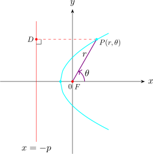
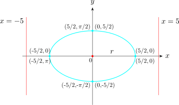
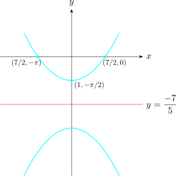

1.9 Conics in Polar Coordinates
A conic section is a collection of \(P\) such that \[\dfrac {\left |PF\right | }{\left |PD\right | } = e \hspace {0.3cm}\cdots \cdots \cdots \hspace {0.3cm} (I) \]
where \(\left |PF\right |\) is the distance from \(P\) to the focus and \(\left |PD\right |\) is the distance from \(P\) to the directrix and \(e\) is the eccentricity.

\[\left |PD\right | = P + r\cos \theta \]
Further, \(\left |PF\right |=r\), and so if \(P\) is on the cone, described by \((I)\) then \[\dfrac {r}{P + r\cos \theta } =e\hspace {0.3cm}\cdots \cdots \cdots \hspace {0.3cm} (1)\]
Solving for \(r\), we have \[r = \frac {eP}{1 - e\cos \theta }\hspace {0.4cm}\cdots \cdots \cdots \hspace {0.4cm} (II)\]
which is a polar equation of a conic section whose focus is at the origin and directrix is \(P\) units to the left of the focus.
Solution.
We write the given equation in the form of equation \((II)\)
i.e \(\hspace {0.3cm} r = \dfrac {8}{1 - 2\cos \theta } = \dfrac {2(4)}{1 - 2\cos \theta }\)
\(\implies \hspace {0.3cm} e = 2\) and \(P = 4\), since \(e>1\) the curve is a hyperbola whose focus is at the origin and its associated directrix is 4 units to the left of the focus.
Note.
- 1.
- The polar equation of a conic which has one focus at the origin and directrix \(P\) units to the right of the origin is given by \[r = \dfrac {eP}{1 + e\cos \theta } \hspace {0.3cm}\cdots \cdots \cdots \hspace {0.4cm} (III)\]
- 2.
- The polar equation of a conic which has one focus at the origin and directrix \(P\) units below the origin is given by \[r = \frac {eP}{ 1 -e\sin \theta }\hspace {0.3cm} \cdots \cdots \cdots \hspace {0.4cm} (IV)\]
- 3.
- Similarly \[r = \frac {eP}{1 + e\sin \theta }\hspace {0.4cm}\cdots \cdots \cdots \hspace {0.3cm} (V)\] represents the polar equation of a conic which has the focus at the origin and directrix \(P\) units above the origin.
Identify the conic section and give its eccentricity and the distance of the directrix from the origin. Hence sketch the curve. \[(1)\hspace {0.6cm} r = \dfrac {5}{2 + \cos \theta }\hspace {2cm} (2)\hspace {0.6cm} r = \frac {7}{2 - 5\sin \theta }\]
Solution.
- 1.
- \begin {align*} r & = \frac {eP}{1 + e\cos \theta }\\ & = \frac {5}{2 + \cos \theta } = \frac {5}{2\Big [1 + \dfrac {1}{2}\cos \theta \Big ]}\\ & = \frac {5/2}{1 + \dfrac {1}{2}\cos \theta }\\ & = \frac {\Big (\dfrac {1}{2}\Big )\hspace {0.1cm}(5)}{1 + \dfrac {1}{2}\cos \theta } \end {align*}
\(\implies \hspace {0.5cm} e = \dfrac {1}{2}< 1 \hspace {0.3cm} \implies \hspace {0.3cm}\) the eccentricity is \(\dfrac {1}{2}\) and the conic is an ellipse.
\(P = 5\hspace {0.3cm}\) the directrix is 5 units on the right hand sided of the origin \(x = 5\).
\[(r,\theta )\]

- 2.
- \begin {align*} r & = \frac {7}{2 - 5\sin \theta }= \frac {7}{2\Big [1 - \dfrac {5}{2}\sin \theta \Big ]}\\ & = \frac {7/2}{1 - \dfrac {5}{2}\sin \theta }\\\\ & = \frac {(5/2)(7/5)}{1-\dfrac {5}{2}\sin \theta } \end {align*}
\(\therefore \hspace {0.3cm} e = \dfrac {5}{2}>1 \implies \) the conic is a hyperbola.
\(P = \dfrac {7}{5} \implies \) the directrix is \(\dfrac {7}{5}\) units below the \(x-\)axis.

Questions on this section
Stuck on something here? Ask below and it stays attached to this topic.